域名
登陆腾讯云平台 https://cloud.tencent.com/ 并且注册账号
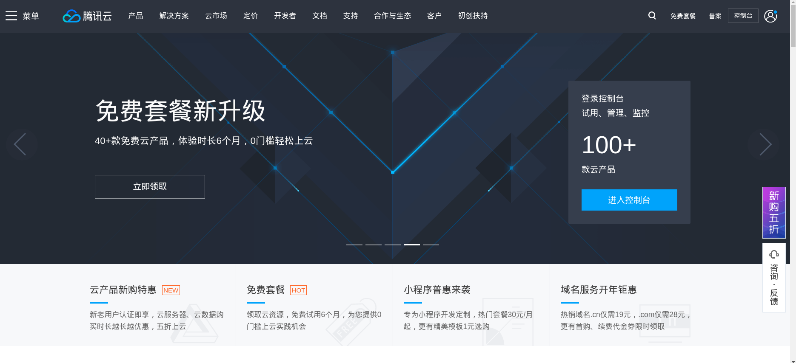
选择产品-域名注册
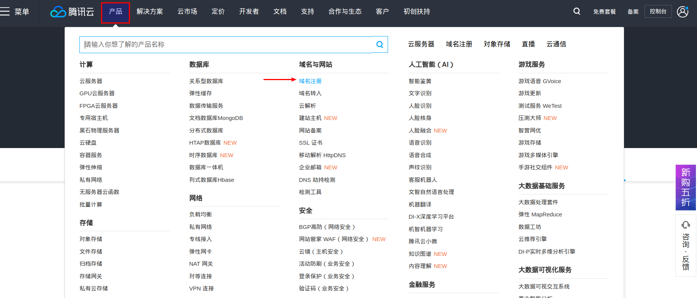
输入自己感兴趣的域名前缀，点击搜索
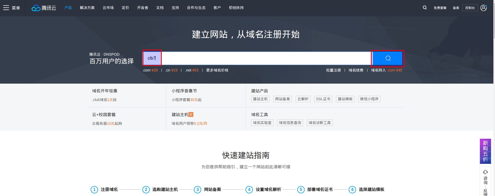
挑选一个后缀
（由于clb7.xyz做活动，一年一元，我选择了这个）
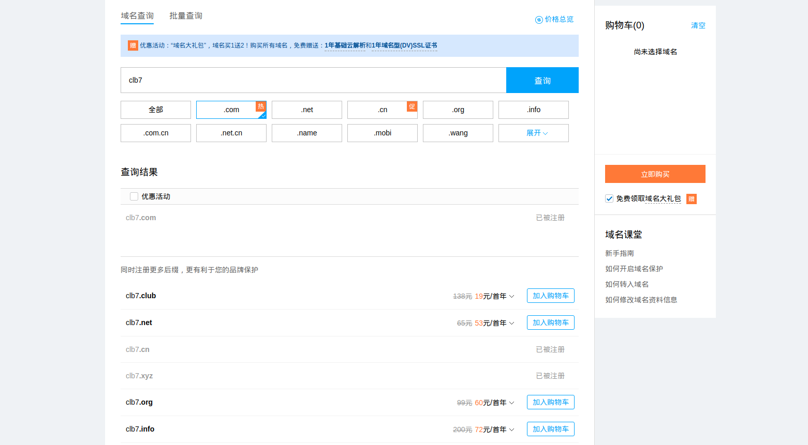
加入购物车，点击立即购买即可
点击控制台进入后台界面
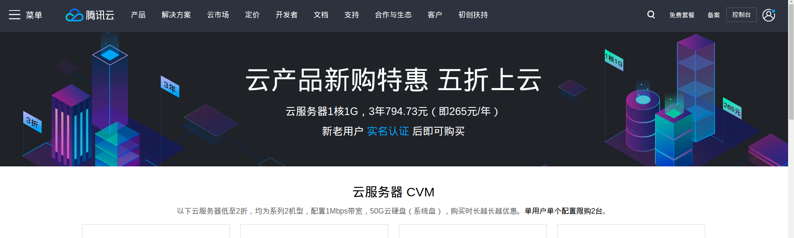
选择域名管理，可以查看自己注册的域名
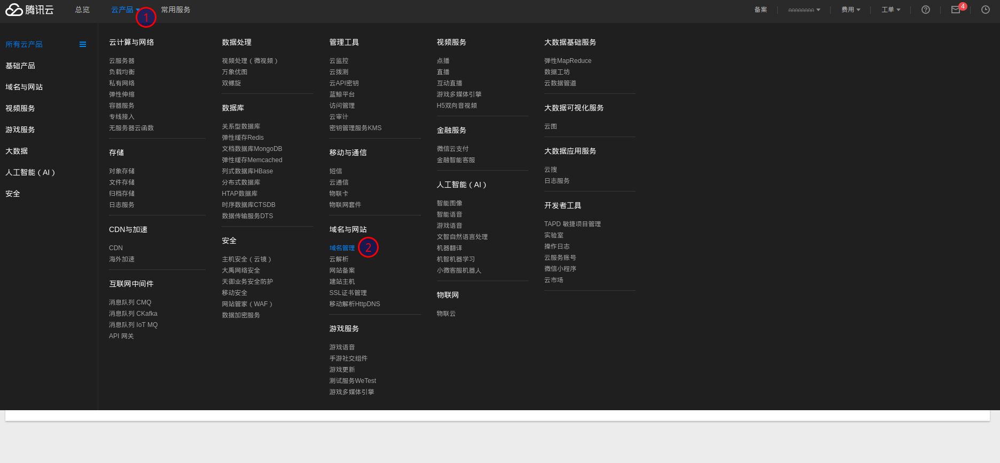
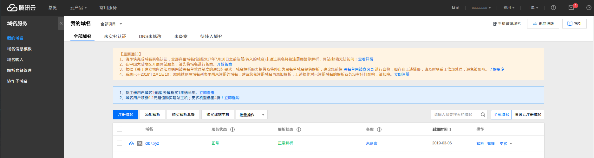
SSL证书管理
选择“云产品”—”域名服务“—”SSL证书管理”，选择“申请证书（免费）”。若未认证，系统将提示进入系统认证
个人认证。
解析
点击域名的“解析”：
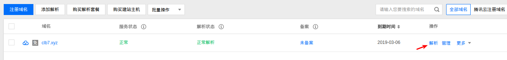
“添加记录”或者“新手快速添加”，服务器ip地址一定要让外网访问到（填写内网ip，或者外网ip地址访问不到，后面https都会拒绝访问）
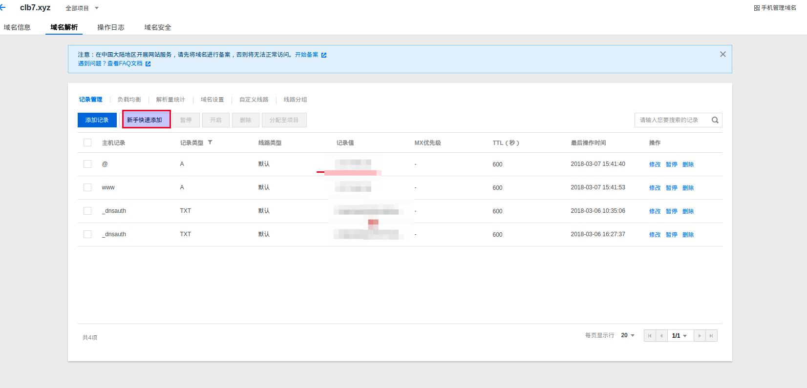
下载SSL证书。用于服务配置
点击“ssl证书管理”–”申请证书”
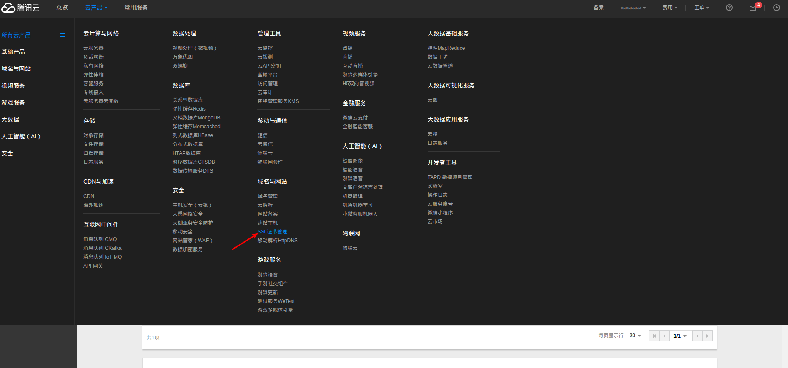
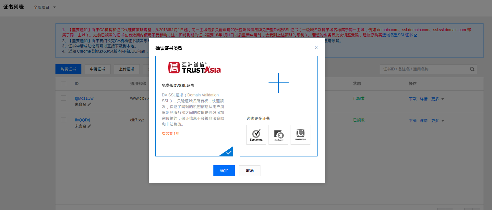
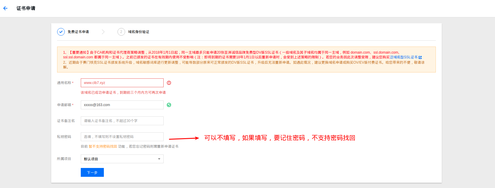
下载证书
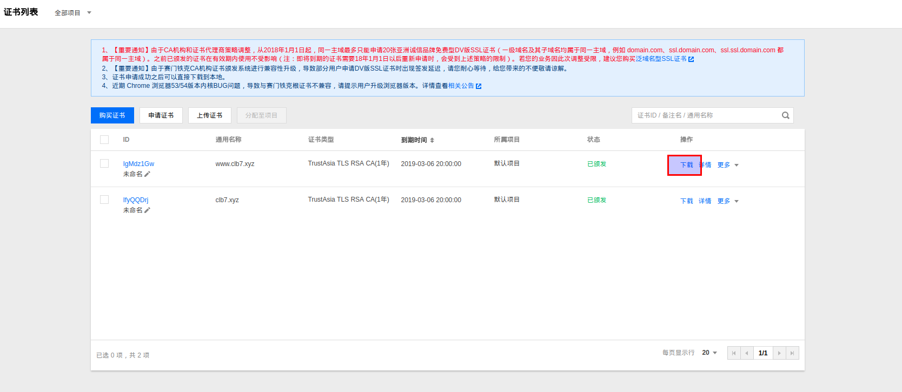
腾讯云免费SSL与Tomcat7的集成
本地安装证书。
下载并解压证书，包含如下文件
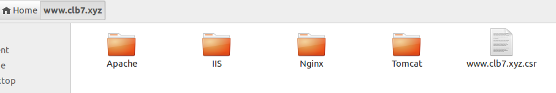
打开tomcat文件夹，将www.clb7.xyz.jks文件复制到tomcat的conf目录下
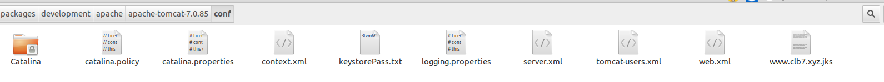
编辑server.xml
将 以下代码的注释放开 或者 复制一份1
2
3<Connector port="8443" protocol="org.apache.coyote.http11.Http11Protocol"
maxThreads="150" SSLEnabled="true" scheme="https" secure="true"
clientAuth="false" sslProtocol="TLS" />
修改为：1
2
3
4
5
6
7
8
9<Connector SSLEnabled="true" acceptCount="100"
clientAuth="false" disableUploadTimeout="true"
enableLookups="true"
keystoreFile="conf/www.clb7.xyz.jks"
keystorePass="xxxx"
maxThreads="200"
port="443"
protocol="org.apache.coyote.http11.Http11Protocol"
scheme="https" secure="true" sslProtocol="TLS"/>
| 配置文件参数 | 说明 |
|---|---|
| SSLEngine on | 启用SSL功能 |
| certificateKeystoreFile | 证书文件(具体包含证书文件路径) |
| certificateKeystorePassword | 证书验证密码 |
| clientAuth | 指定是否需要验证客户端证书,如果该设置为“false”,则为单向SSL验证 |
| sslProtocol | 使用的协议 |
| type | 证书类型 |
| certificateKeyAlias | 是证书别名，放访问域名 |
启动tomcat服务器,访问域名：
在使用 Chrome 56 以上版本就会发现，打开HTTP 网站将在地址栏出现 “不安全” 的红色警示。而很多企业已经将其网站直接转向HTTPS连接，网址前已经增加了一个小锁样式的图标。别看这么简单的一个“小锁”，它却极大保障了网站的信息安全，大大避免了用户隐私泄露和流量劫持的现象。
Chrome访问：
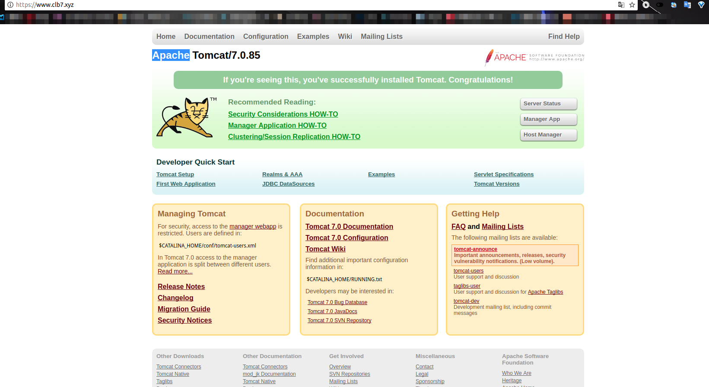
使用火狐浏览器访问：
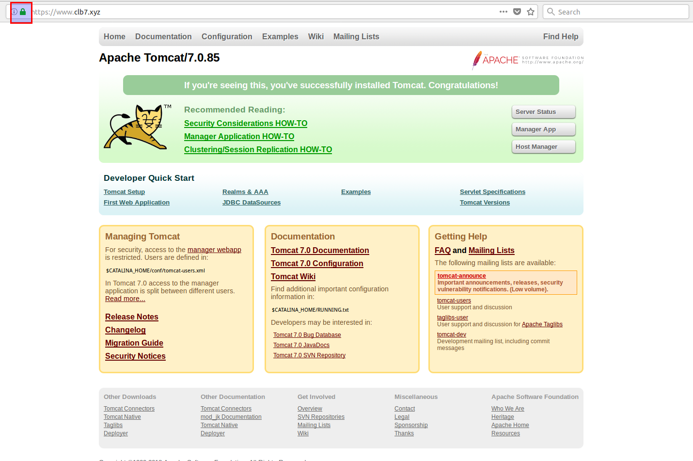
腾讯云免费SSL与nginx的集成
将证书目录nginx下面的1_www.clb7.xyz_bundle.crt 和 2_www.clb7.xyz.key 2个文件，传到服务器nginx目录下面，（与nginx.conf文件在同一个目录下）
编辑nginx.conf1
2
3
4
5
6
7
8
9
10
11
12
13
14server {
listen 443;
server_name www.clb7.xyz;
ssl on;
ssl_certificate 1_www.clb7.xyz_bundle.crt;
ssl_certificate_key 2_www.clb7.xyz.key;
ssl_session_timeout 5m;
ssl_protocols TLSv1 TLSv1.1 TLSv1.2;
ssl_ciphers ECDHE-RSA-AES128-GCM-SHA256:HIGH:!aNULL:!MD5:!RC4:!DHE;
ssl_prefer_server_ciphers on;
location / {
proxy_pass http://192.168.x.x:8081;
}
}
访问后台接口,成功
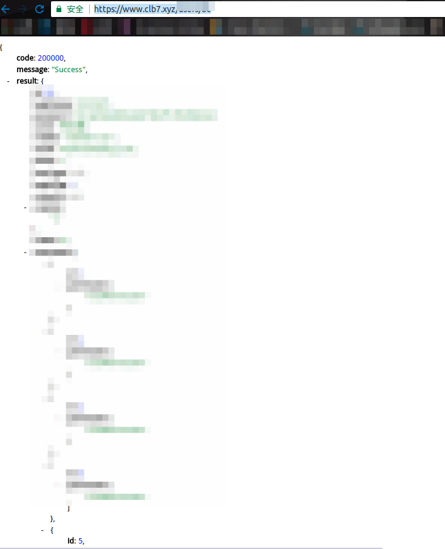
也可参考“证书安装指引”：https://cloud.tencent.com/document/product/400/4143